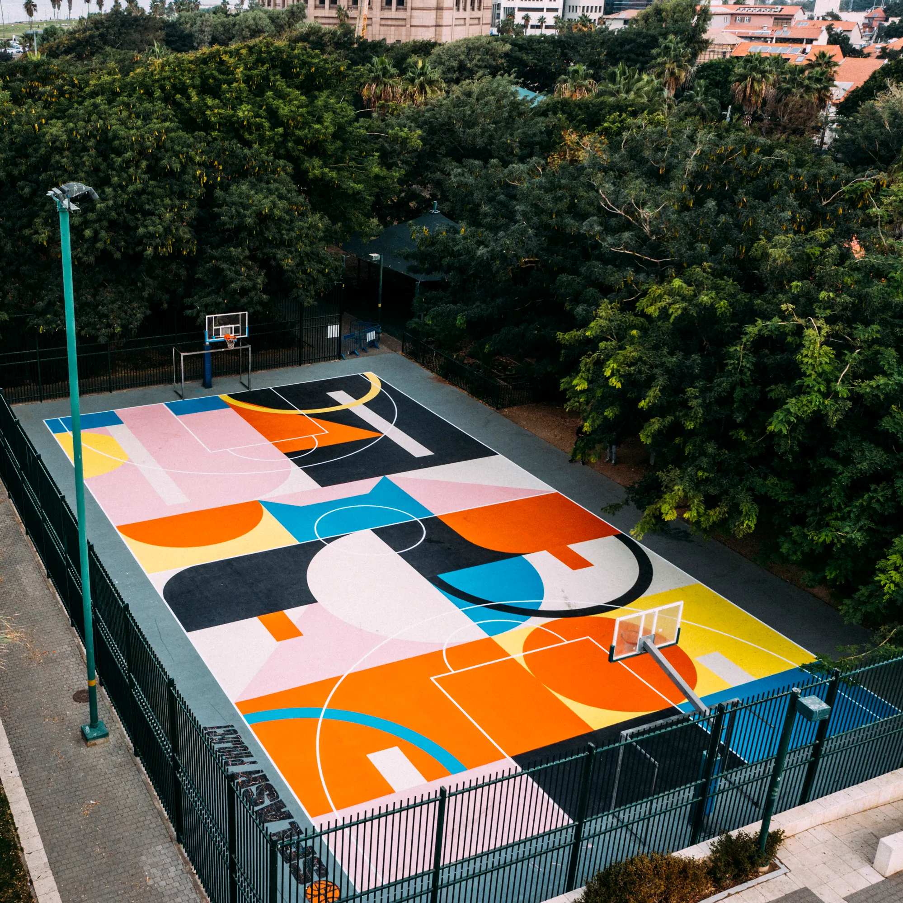
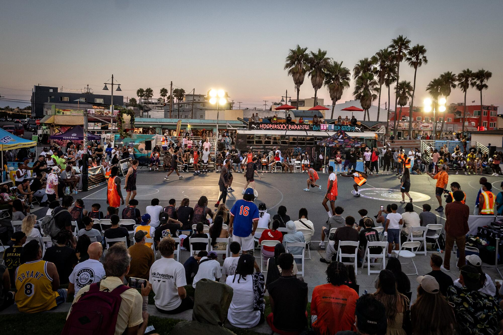
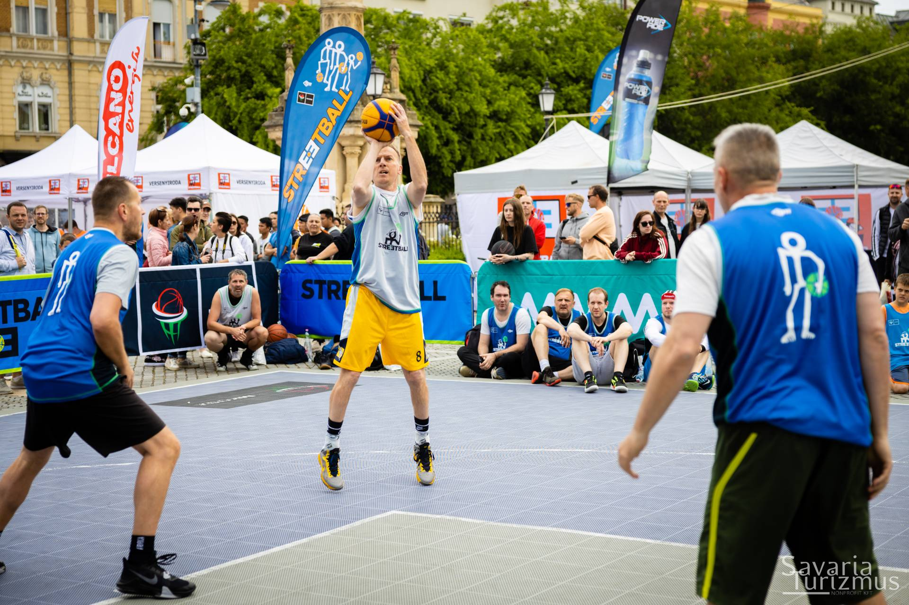
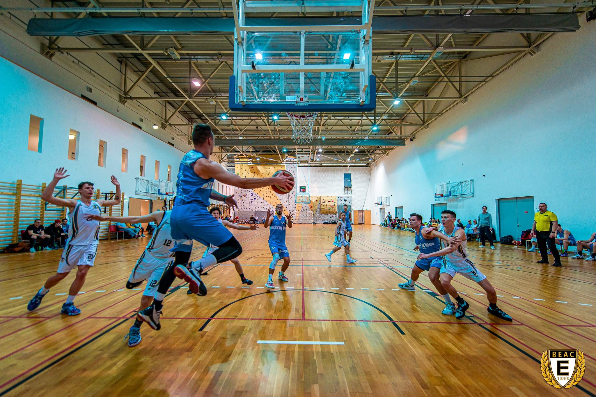
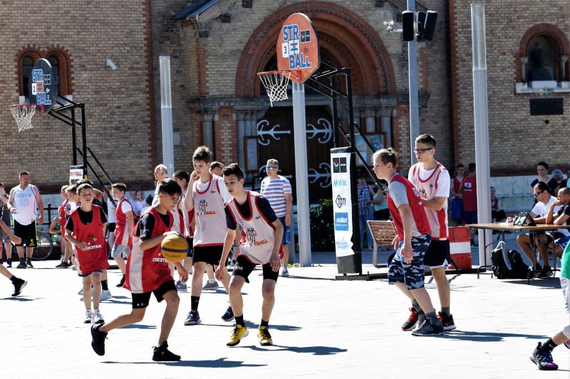
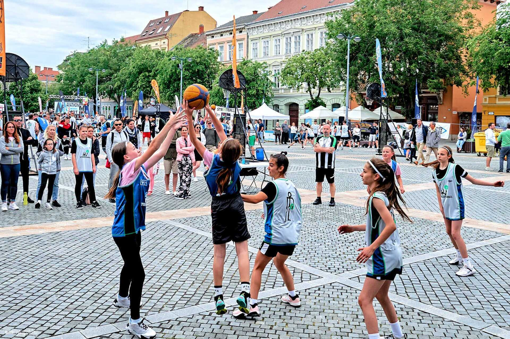

Néhány pillanatkép, ami bemutatja a streetball hangulatát, sokszínűségét és a közösséget.

Városi streetball pálya, ahol a legtöbb pickup meccs elindul.Intenzív meccsszituáció, amikor minden pont számít.

Aktív közönség, amely plusz energiát ad a pályán lévőknek.Meccsszituáció a játékosok szemszögéből.

Ideális sport az idősebb korosztály számára is.

Télen a beltéri pályák teszik lehetővé a játékot.

Utánpótlás mérkőzések, ahol a fiatalok fejlődhetnek.

Lányok körében is egyre népszerűbb a streetball.